Affinity
A group of schemas sharing a common Tag can be opened with Affinity.
Affinity clusters semantically related schemas and provides an interface for viewing and exploring the clusters. Clusters are depicted two different ways: using a 2D view (the left pane) and using a dendrogram(the right pane). 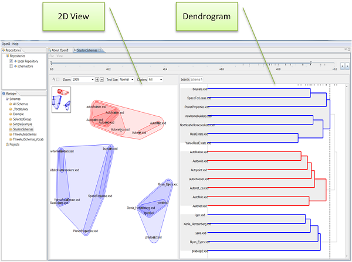
Opening a Tag with Affinity
Once schemas share a common Tag then they can be opened with Affinity.
Affinity can be opened by double clicking on a Tag name.
Alternatively, Affinity can be opened by right-clicking on a Tag and selecting Open, as shown below. 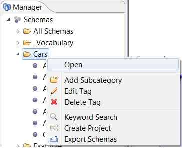
If the Tag contains a lot of schemas or if the schemas in the Tag are large, a progress bar will appear while Affinity is opening.
Viewing Clusters
2D View
The 2D view is a diagram used to show the degree of similarity between all schemas. Schemas that appear close together in the 2D view are generally the most semantically related. Schemas that appear farther apart are generally the least semantically related. Clusters are overlaid on the 2D view by circling the schemas in each cluster.

There are a number of options for interacting with the view. Most of these options are shown across the top of the 2D View:
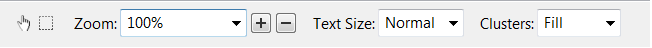
Hand icon: enables panning the 2D View by clicking and dragging Square icon: enables selection of multiple schemas Zoom: specifies the zoom level Plus and Minus icons: an alternate method of specifying the zoom level Text Size: changes the text size for the names of the schemas Clusters: specifies if clusters are overlaid onto the 2D View and how
There are additional options in Affinity's View menu, which currently appears on PCs but not on Macs. Select View then Craig-Ro-Gram Options then options such as Show Tool Bar. This results in the 2D View Tool Bar being hidden.
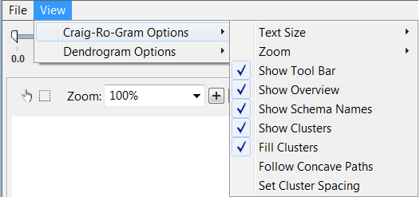
Options that can only be found in the menu are Show Tool Bar, Show Overview, Follow Concave Paths, and Set Cluster Spacing. All other options in the menu can be accomplished using the previously described 2D View Tool Bar.
Dendrogram
The dendrogram is a branching diagram used to show clusters. Schemas that are most semantically related are connected by cross-bars farther to the left. Below is an example of this.
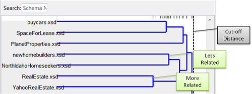
As shown above, a dotted vertical line is used to indicate the current cut-off distance. High cut-off distances (i.e., farther to the right) include larger more loosely related clusters. As the cut-off distance is lowered (i.e., moved to the left) the clusters become smaller and more tightly related.
Below is an example of what the Dendrogram looks like after the cut-off distance has been lowered. Rather than one large cluster containing all schemas in the Tag, there are now three smaller clusters each containing a subset of the schemas.
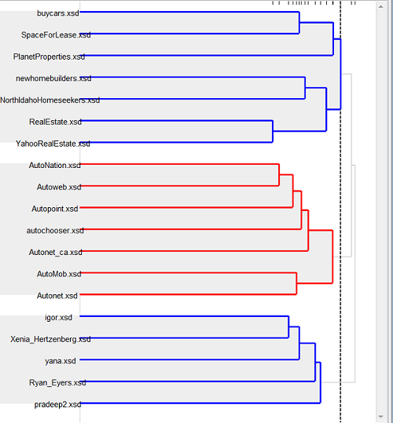
The color does not have meaning. It is only there to help visually distinguish adjacent clusters. The top most cluster will always be colored blue with the rest alternating red then blue.
The 2D view's cluster overlays use the colors from the dendrogram.
There are two options for modifying the dendrogram view. The red and blue alternating colors can be turned off. The gray cluster backgrounds can also be turned on or off. To change either of these options, Select View then Dendrogram Options then the option you want to change (Show Alternating Colors or Shade Backgrounds). Note that the View menu in Affinity currently appears on PCs but not on Macs.
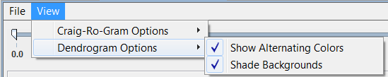
After turning colors on or off the colors will not be updated in the 2D view until you interact with it in some way (e.g, pan).
Changing the Cluster Cut-Off Distance
High cut-off distances include larger more loosely related clusters. As the cut-off distance is lowered the clusters become smaller and more tightly related.
The cut-off distance can be changed using the slider that extends across the top of both the 2D View and the Dendrogram.
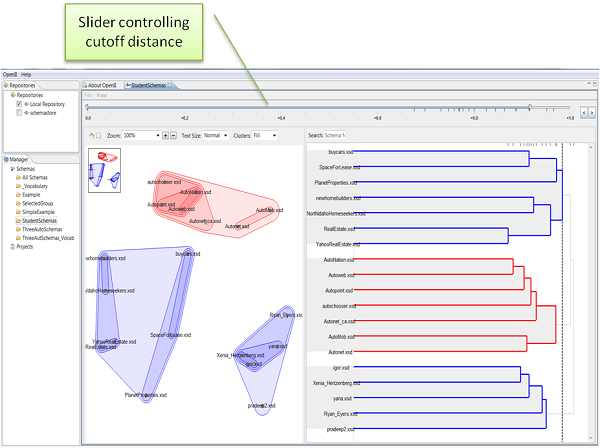
To change the cut-off distance, drag the right-most thumb across the slider. Or, for small or large jumps, click on the arrows as shown in the image below. This will hop the right-most thumb from one cluster to the next. You'll notice that the hops always leave the right-thumb directly above one of the small black tick marks. This is because the small black tick marks on the slider indicate each cluster's cut-off distance.
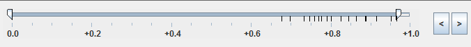
The paragraphs above described changing the maximum cut-off distance. The minimum cut-off distance may be useful if you only want to see large loosely related clusters and eliminate the noise from smaller sub-clusters. To change the minimum cut-off distance, move the left-most thumb across the slider.
Viewing Terms Shared by Schemas in a Cluster
It is sometimes useful to get more details about why certain schemas were clustered together. This can be accomplished by viewing the terms shared by all schemas in a cluster. To do this, right-click on a cluster in the 2D view and select View terms shared by schemas, as shown below.
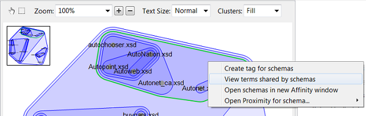
A Terms in Cluster box, like the one shown below, will appear showing all of the terms that appeared in any schema in the cluster.
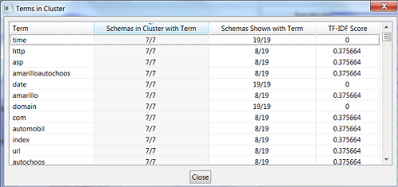
Note that when right-clicking on a cluster in the 2D view you can also create a Tag that contains all schemas in that cluster, open the schemas from that cluster in a new Affinity window (which will recalculate the layout since the input to Affinity is different), or you can open the cluster with Proximity.